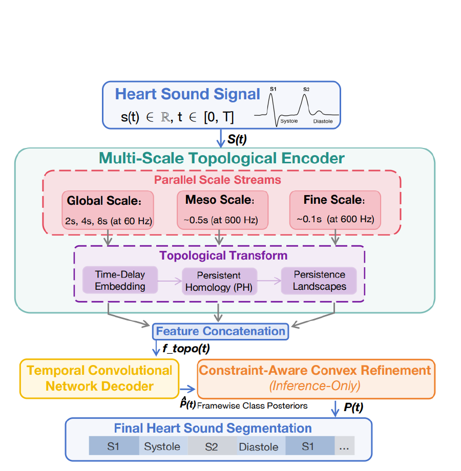

TopSeg turns persistent topological structure into a data-efficient representation for segmenting S1, systole, S2, and diastole from phonocardiograms.
Peihong Zhang · Zhixin Li · Yuxuan Liu · Rui Sang · Yiqiang Cai · Yizhou Tan · Shengchen Li
71.9
macro-F1 · 10% labels · 60 ms tolerance
+6.2
F1 over log-mel TCN · 10% labels
2 datasets
training benchmark + external validation
Method in motion
One heart sound becomes three topological views.
Animated reading: nested temporal windows scan the PCG, then topology persists across scale before the decoder emits a physiologically ordered state sequence.
Figure · TopSeg representation and decoding pathThe moving windows denote scale-specific analysis; the four-state band shows the constrained output order.
01 · Question
Can structural signal replace some annotation?
Heart-sound boundaries are expensive to annotate, while conventional time-frequency representations do not explicitly encode the repeating topology of a cardiac cycle.
Scarcity
Expert labels are limited.
The controlled protocol evaluates 5%, 10%, 25%, 50%, and 100% subject-level label budgets.
Noise
Envelope cues can break.
Simple amplitude envelopes can be sensitive to recording quality and do not expose multi-scale structure.
Physiology
Order is not arbitrary.
The four states follow a physiological sequence with characteristic durations that can constrain inference.
02 · Method
Represent shape, then enforce plausible state transitions.
Embed
Time-delay geometry
Each temporal scale is embedded into a point cloud so repeating acoustic dynamics become geometric structure.
Describe
Persistent homology
H0 and H1 persistence landscapes summarize connected components and loops across filtration scales.
Decode
TCN + refinement
A lightweight TCN predicts states; inference-only convex refinement encourages valid order, duration, and topology alignment.
03 · Evidence
Topology helps most when labels are scarce.
5% labels
66.7 F1
Full TopSeg at 60 ms tolerance.
TopSeg
66.7
Topo TCN
64.1
10% labels
71.9 F1
The log-mel TCN reports 64.2, while the topology-only TCN reports 70.4.
100% labels
85.3 F1
The advantage persists when the complete labeled training set is used.
Macro-F1 values at 60 ms tolerance, reported in Tables 3 and 4 of the paper.
04 · Boundary
Designed around data efficiency and physiological plausibility.
Evaluation frame
PhysioNet/CinC 2016: 3,153 recordings from 764 subjects.
External validation on CirCor: 5,272 recordings from 1,568 subjects.
Subject-level splits prevent recording leakage across budgets.
Claim boundary
Topological features add preprocessing and design choices.
The published framework is deliberately representation-first: three time horizons produce topology-aware descriptors, then a lightweight temporal decoder and inference-only convex refinement recover the ordered cardiac states.

Figure 3 · TopSeg framework, reproduced from the paper.The refinement layer is used at inference to preserve physiological sequence structure.
Three scales global, meso, and fineTransform embed → homology → landscapesDecode TCN + constrained refinement